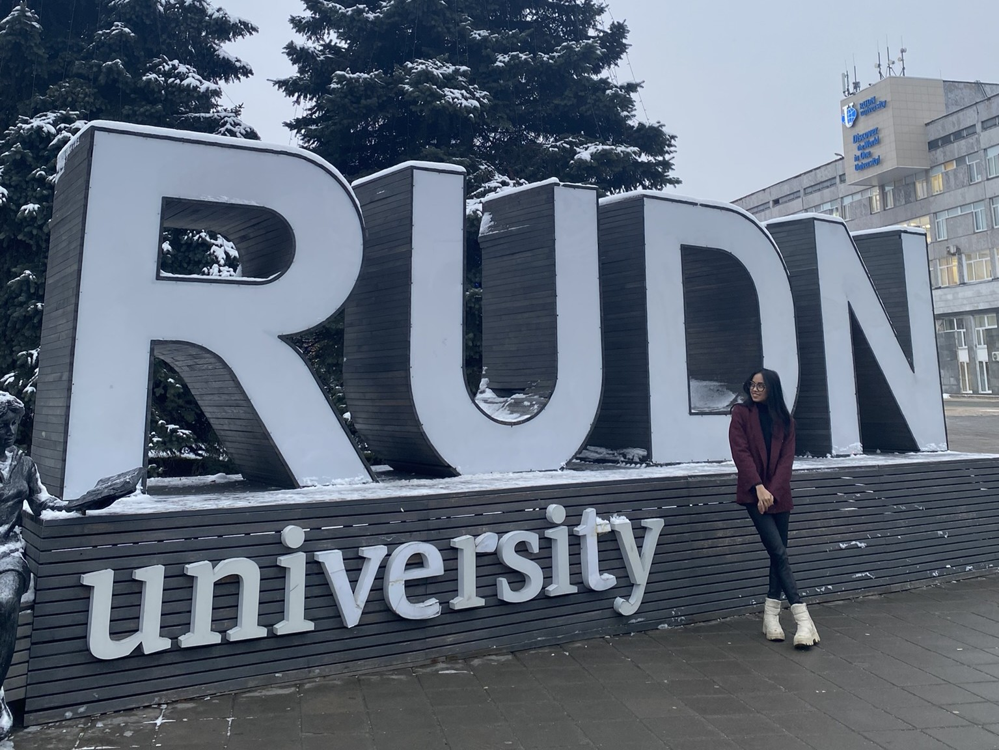
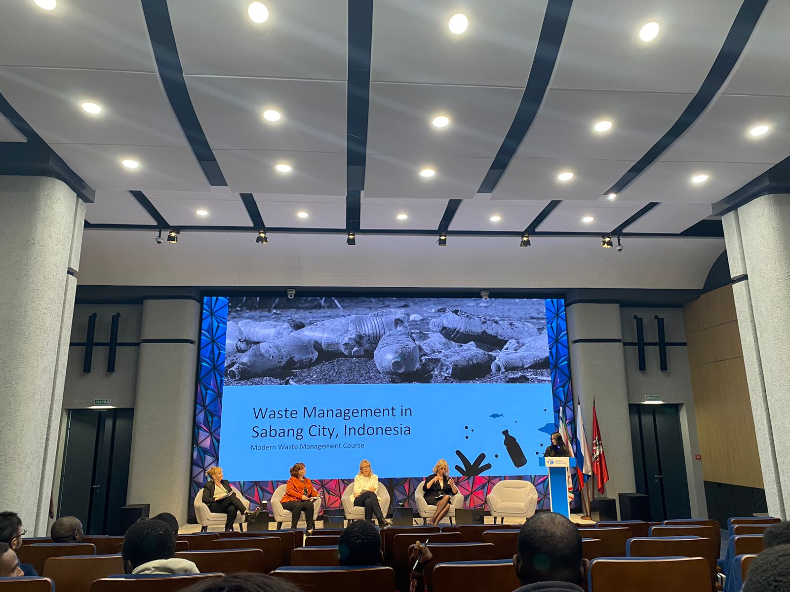

May 2026

Studying abroad has enriched me with numerous new experiences that I could never have gained in Indonesia alone. In my fifth semester, I participated in a one-semester student exchange program to RUDN University in Moscow, which equipped me with valuable skills such as adaptability, cross-cultural communication, and independent problem-solving. Living and studying in a different academic and social environment challenged me to step out of my comfort zone and grow both personally and academically.

Through this program, I experienced what it is like to study in an international academic environment. My peers and professors encouraged students not only to listen to lectures but also to actively participate in discussions, express ideas, and think critically. This interactive learning atmosphere helped me become more confident in sharing my perspectives and collaborating with people from diverse backgrounds.

During the program, BINUS gave me the opportunity to explore beyond my major by allowing me to take courses in environmental engineering, even though my primary field of study is data science. This interdisciplinary exposure broadened my perspective and strengthened my interest in applying data science to sustainability-related issues.

My journey at RUDN University reached its peak when I presented two final projects in a competition organized by the head of the program. I was the only participant to submit multiple entries, presenting Energy Industry Greenhouse Gas Emissions and Waste Management Schemes for Sabang. These projects earned me first and second place, marking a meaningful milestone in my academic journey. This achievement reinforced my confidence and helped me realize the true extent of my capabilities.